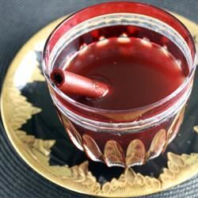

Glogg
Description
A classic Scandinavian hot spiced wine punch served with raisins and almonds. This will surely take the bite off those cold winter nights. Flaming the brandy is optional.
Ingredients
- 2 (750 milliliter) bottles red wine
- 2 (750 milliliter) bottles red wine
- 2 ounces cinnamon sticks
- 20 whole cardamom seeds
- 25 whole cloves
- 1 pound blanched almonds
- 1 pound raisins
- 1 pound sugar cubes
- 5 fluid ounces brandy
Steps
- Pour wine into a large pot. Bring to a boil over medium high heat. Wrap orange zest, cinnamon sticks, cardamom and cloves in cheesecloth, tie with kitchen string and put into pot. Let boil for 15 minutes, stirring occasionally. Stir in almonds and raisins and continue to boil for 15 more minutes. Remove from heat.
- Place a wire grill over the pot and cover with sugar cubes. Slowly pour on brandy, making sure to completely saturate the sugar. Light sugar with a match and let it flame. When sugar has melted, cover pot with lid to extinguish flame.
- Stir and remove spice bag. Serve hot in cups with a few almonds and raisins.